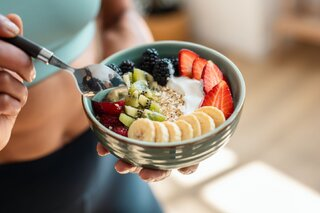

Dicas para se tornar mais saudavel
Para conseguir manter uma alimentação saudavel deve-se ter um objetivo claro, como por exemplo um peso a se atingir, alem disso tem que se manter focado para que tenha uma alimentação mais saudavel.
Principais Dicas
- Consuma Frutas e Vegetais diariamente.
- Beba bastante água.
- Mantenha um equilíbrio entre carboidratos, proteinas e gorduras.
- Siga uma dieta.
- Tenha um objetivo em mente.